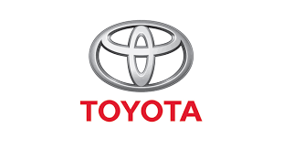

Link tham khảo nguồn
Thông tin chi tiết tập đoàn Toyota

Toyota Motor Corporation là một nhà sản xuất ô tô đa quốc gia của Nhật Bản có trụ sở tại Toyota, Aichi, Nhật Bản.
Trong năm 2017, cơ cấu doanh nghiệp của Toyota bao gồm 364.445 nhân viên trên toàn thế giới Tính đến tháng 9 năm 2018,
đây là công ty lớn thứ sáu trên thế giới tính theo doanh thu.
This article is about the Japanese car manufacturer.
For other uses, see Toyota (disambiguation).Toyota Motor CorporationToyota carlogo.
The Toyota Motor Corporation (Japanese: トヨタ自動車株式会社, Hepburn: Toyota Jidōsha KK,
IPA: [toꜜjota], English: /tɔɪˈoʊtə/, commonly known as Toyota) is a Japanese multinational automotive manufacturer headquartered in Toyota,
Aichi, Japan. It was founded by Kiichiro Toyoda and incorporated on August 28, 1937. In 2017, Toyota's corporate structure consisted of 364,445 employees worldwide[4]
Quay lại trang trước